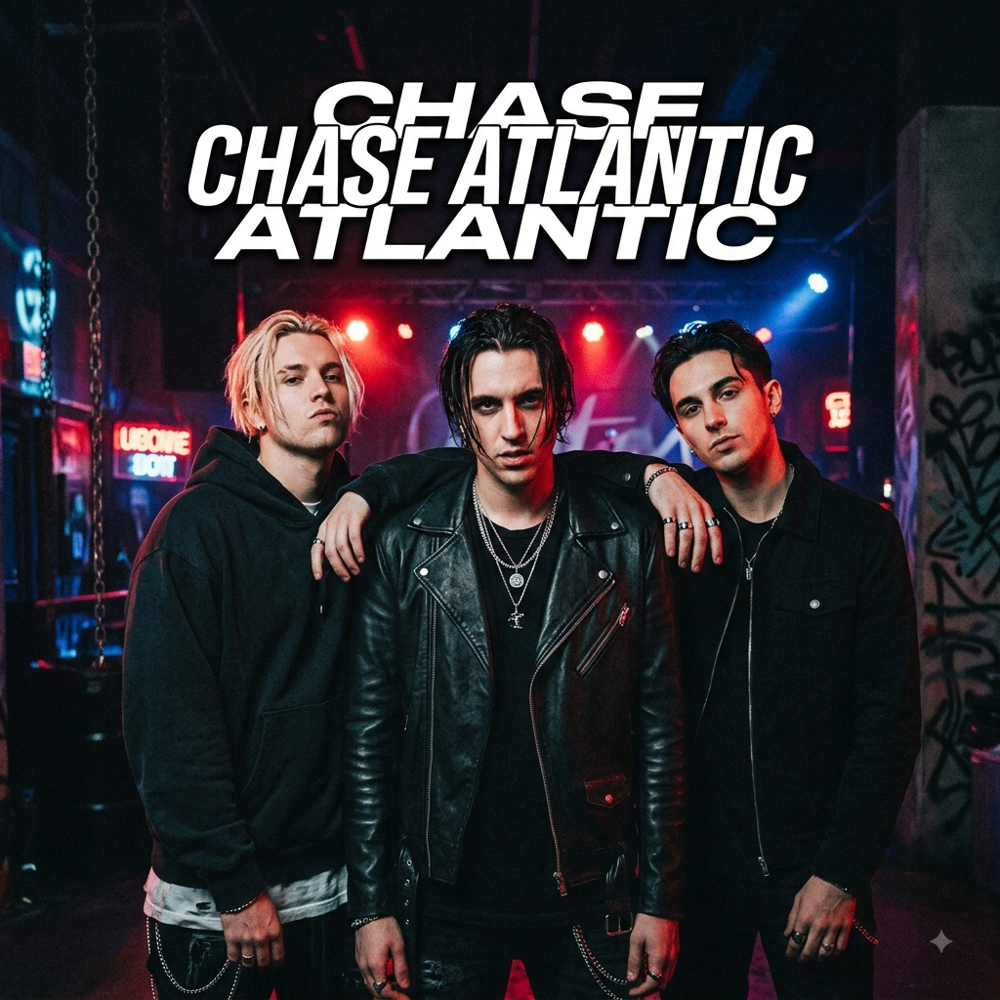

Meu primeiro post
por:Deysielle
Boas-vindas ao meu novo blog! Aqui vou comprtilhar meus conhecimentos e curiosidades sobre a banda Chase Atlantic
Meu segundo post
por:Deysielle
Boas-vindas ao meu novo blog! Aqui vou comprtilhar meus conhecimentos e curiosidades sobre a banda Chase Atlantic